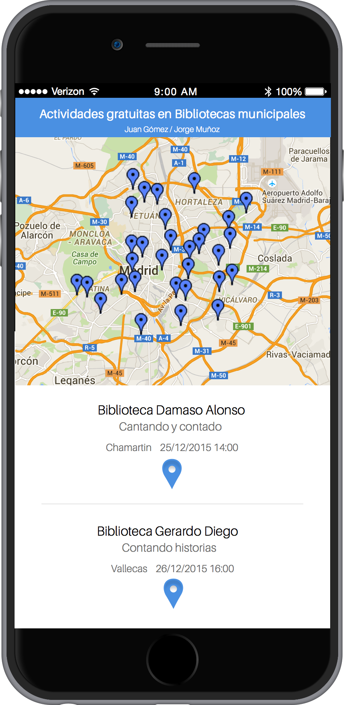

Actividades gratuitas en Bibliotecas municipales de la Comunidad de Madrid en los próximos 60 días
Los requisitos de nuestra aplicación son:
Visualización de un mapa que muestre las diferentes bibliotecas con actividades gratuitas
Filtrar los datos de localización de las diferentes bibliotecas para mostrarlos en el mapa
Mostrar los detalles de las diferentes actividades que se van a realizar
Mockup:
